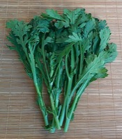

しょくようぎく（食用菊）の生産量
いちばん多くとれる都道府県
しょくようぎくが日本でいちばん多くとれるのは愛知県です。360 tで、全国（564 t）の64%を占めます。

| 順位 | 都道府県 | 収穫量 | 全国に占める割合 |
|---|---|---|---|
| 1位 | 愛知県 | 360 t | 64% |
| 2位 | 山形県 | 90 t | 16% |
| 3位 | 新潟県 | 55 t | 9.8% |
この数字について
- 分類：キク科
- 全国の収穫量：564 t
- この数字が表すもの：収穫量（畑や田でとれた重さ）
- 調査：地域特産野菜生産状況調査 令和4年産
- 8県分を調査（調査していない県は順位に入りません）